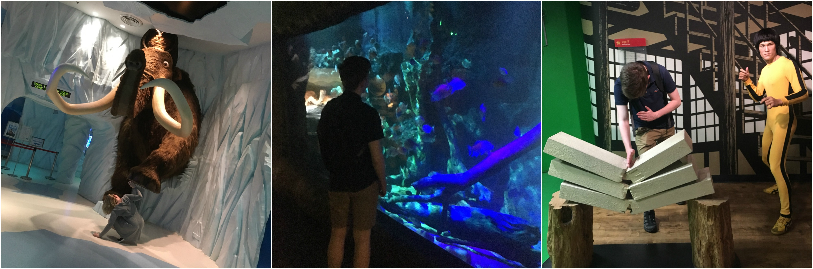
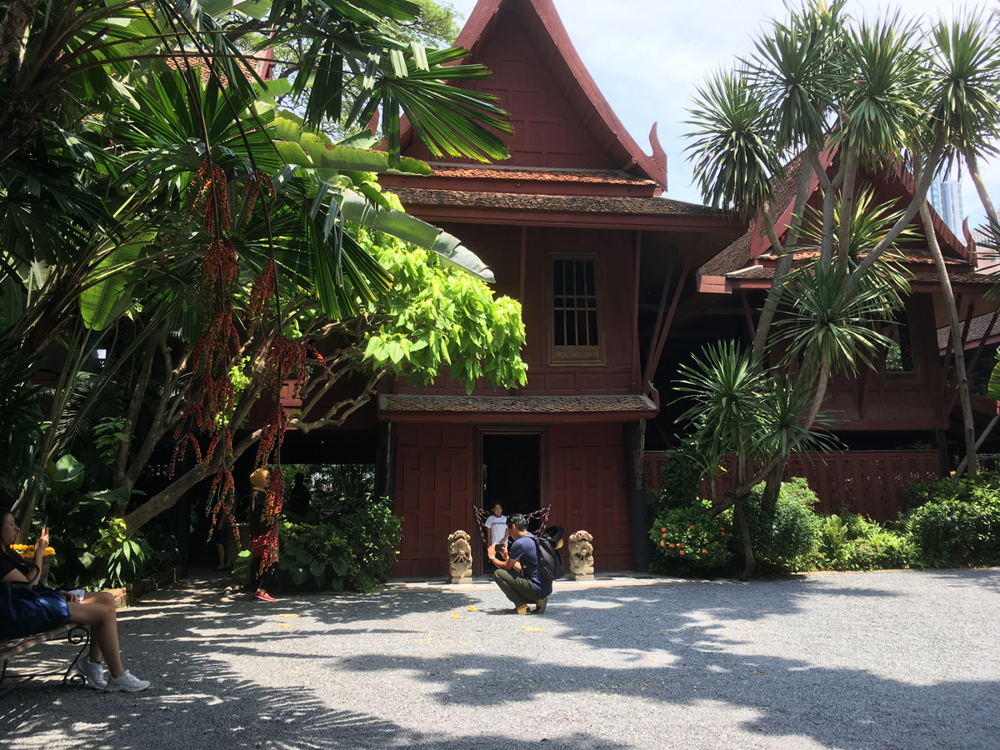
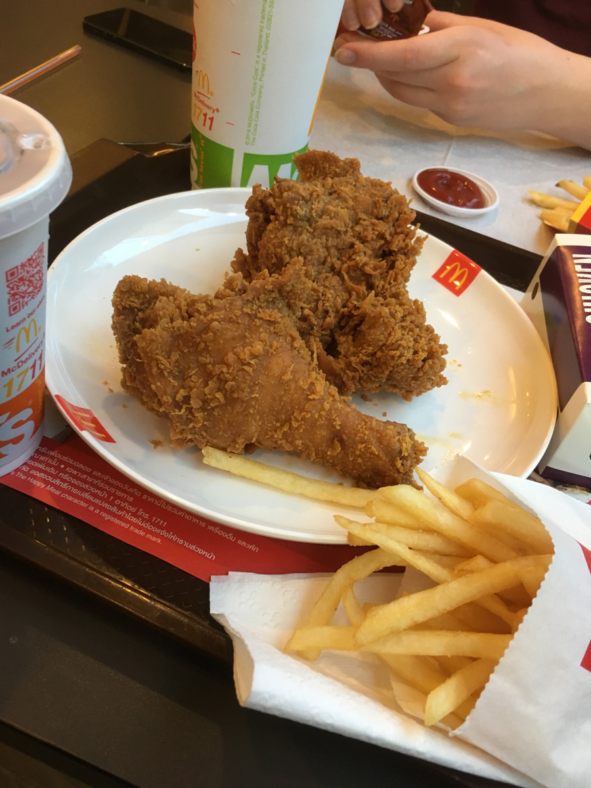

Jim Thompson House, bland annat
Idag blir det ett dubbelinlägg då gårdagen inte kändes så värst innehållsrik + att vi somnade väldigt tidigt. Men vi kan börja därifrån ändå!
Igår

Vi började dagen på "Sea Life Bangkok Ocean World" - vilket helt enkelt är Bangkoks egna nedskalade version av Sea World i USA. Det var väl en helt okej upplevelse, helt klart det dyraste vi gjort hittills. 125 kr inträde per person, vilket säger en del om priserna här. Vi såg det vanliga, olika sorters fisk, pingviner, uttrar, sköldpaddor, med mera. Ganska kort tur kändes det som när vi kom ut, vi var där inne i strax under en timme. Det råkar också vara så att detta låg inuti shoppingcentret vi var i dagen innan. Det finns verkligen allt där. Så innan vi drog vidare mot dagens nästa attraktion åt vi på en Japansk restaurang. Jag tror vi åt "fel" för personalen kollade så konstigt på oss medans vi var där. Nog för att vi inte riktigt förstod hur man skulle kombinera alla saker vi blev serverade, men man kände sig lite uttittad.
Efter lunch besökte vi Madame Tussauds, två köpcentrum bort. Men fortfarande samma "kedja" av köpcenter. Vi fick halva priset då vi köpte biljetterna i en liten kiosk innan vi gick dit, så det var ju trevligt. Själva utställningen var lustig, svårt i början att uppfatta vad som var riktiga människor/dockor då det står utplacerat lite varstans.
Idag
Idag besökte vi Bangkok Art and Culture Center, vilket huserade ett antal olika utställningar. När vi kom in så såg det otroligt nerplockat ut. Bilder jag sätt på Tripadvisor visade hur det var olika små konstutställningar på nästan varje våning. Men det var bara en kulturutställning helt på Thailändska mitt på bottenvåningen. Lite förbluffade åkte vi uppåt och på våning 5 så insåg vi att den "riktiga" utställningen inte började förens på våning 6. Man behövde lämna in väskorna innan man fortsatte dock. En del av utställningen var ganska intressant, den delen där unga konstnärer skildrade olika thailändska "saker", eller vad man ska kalla det. Man fick tyvärr inte ta några bilder, men det verkade inte vara så strikt på den punkten då varannan japansk turist var framme med kameran i högsta hugg.
Efter kulturchocken begav vi oss till Jim Thompson house! Kort om Jim från Wikipedia så jag slipper dra hans livshistoria:
James Harrison Wilson "Jim" Thompson, (born 21 March 1906 — disappeared 26 March 1967) was an American businessman who helped revitalise the Thai silk industry in the 1950s and 1960s. At the time of his disappearance he was one of the most famous Americans living in Asia. Time magazine claimed he "almost singlehanded(ly) saved Thailand's vital silk industry from extinction". His disappearance from the Cameron Highlands generated one of the largest land searches in Southeast Asian history, and is one of the most famous mysteries in the region.

Vi fick en tur av huset på (för en gångs skull!) bra engelska för 150 bath. Mycket intressant hus, som tydligen byggdes genom att kombinera flera olika gamla thailändska hus och sätta en västerländsk prägel på det hela. Roligt nog besökte vi huset på Jims födelsedag, den 21a mars. Så huset var extra utsmyckat med blommor dagen till ära.
Efter det åt vi åter igen lunch på Siam Paragon, man får väldigt lyxig mat för runt 100 svenska kronor. Självklart så kan vi spendera vääääldigt mycket mindre på mat. Men varför då, när vi har budgeten att äta "dyrare" så är ju det trevligt.
Det här är också sista dagen i Bangkok. Jag känner att jag inte riktigt hann med att se all tempel som staden erbjuder som huvudattraktioner. Jag är ingen storstadsmänniska så hela upplevelsen med värmen, den massiva mängden människor, och faktumet att vi vände vårt dygn, har motarbetat det hela.
Bangkok är nog inte en stad jag vill tillbaks till igen. För mycket "tuktuk-skojare" och liknande. För dålig engelska, jag är faktiskt förvånad över hur lite engelska alla pratar här. Allt detta i kombination med klimatet gör det definitivt till en upplevelse, men inte alltid en särskilt stressfri sådan.

Vi avslutade Bangkok med ett besök på McDonalds, vilket var lite annorlunda i jämförelse med Donken hemma, i presentation åtminstone. Imorgon ska vi upp vid klockan 05:00 och ta oss till flygplatsen för att sedan flyga mot Koh Samui, och sedan ta färjan till ön Koh Tao. Skönt med inte storstad (hoppas jag)!